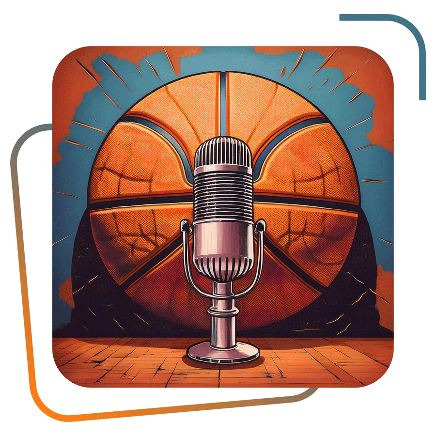
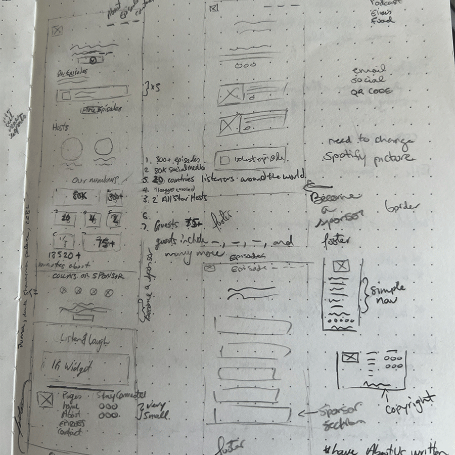
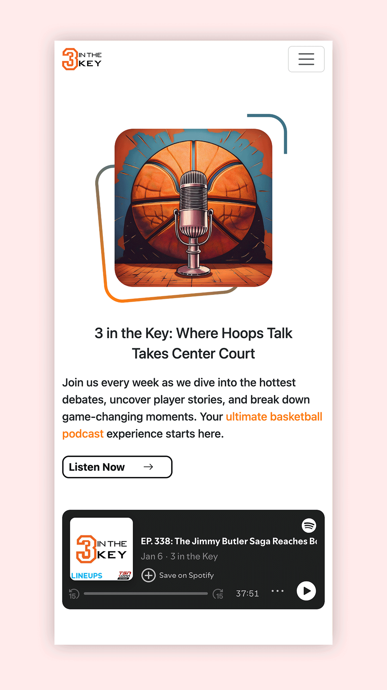
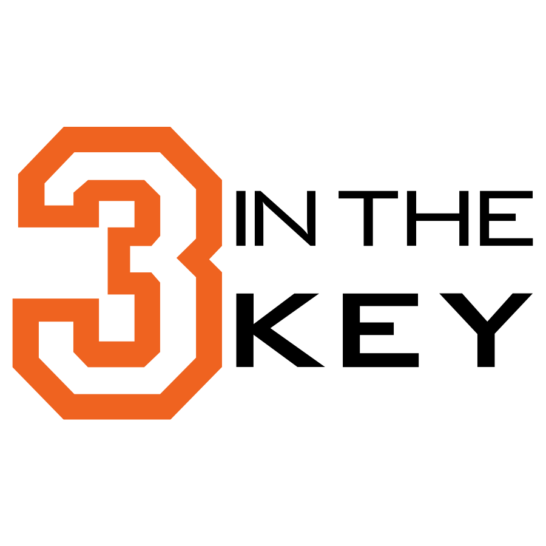

Client
3 In The Key
Role
UX/ UI
Project Type
Web Dev & Design
Date
2 Months
The Objective
The objective of the 3 In The Key website redesign was to create a visually engaging, user-friendly platform that enhances both listener engagement and sponsor visibility. The goal was to establish a strong brand identity that reflects the podcast’s dynamic and passionate basketball coverage while ensuring a seamless, interactive user experience. Through research-driven design, the project aimed to increase user interaction, improve content discoverability, and create a community-driven environment where fans could connect with the show and each other. Additionally, the platform needed to strike a balance between delivering value to users and providing effective sponsorship integration without disrupting the user experience.
The Process





37%
Session Duration Increase
Users are spending 37% more time on the site, engaging with articles, podcasts, and features. This highlights a stronger connection with the content and a more immersive experience.
63%
Visual Hierarchy Effectiveness
The UI layout is now 63% more effective in guiding users to important content. Clearer typography, spacing, and call-to-action buttons enhance readability and navigation.
45%
User Engagement Growth
Interactions such as clicks, shares, and comments have increased by 45%. This demonstrates a more interactive and community-driven experience for basketball fans.
A key challenge is ensuring that sponsors and collaborators can easily access relevant content without leaving the website.



"The website has made it so much easier to connect with both our audience and potential collaborators."
Fuad
Click the link to view the 3 In The Key website.
The Brief
Business Goals
The business goal for the 3 in the Key podcast project was to establish a distinctive and engaging brand identity that would resonate with basketball fans across the globe. The goal was not just to create a successful podcast, but also to build a dynamic, inclusive community of listeners, sponsors, and collaborators. This involved developing an engaging platform that served both the fans who crave in-depth basketball analysis and the sponsors looking for valuable exposure. The user goal was to ensure that listeners felt connected to the content, enjoyed a seamless experience, and felt like an integral part of the community.
The Process
The research process was initiated with a mix of qualitative and quantitative methods. I started by conducting surveys and user interviews with listeners to gather insights into their preferences, podcast consumption habits, and design expectations. Additionally, I did a competitive analysis to understand what was working well in the market and where we could differentiate 3 in the Key.
Who Did You Speak To?
I spoke to a wide range of people, including: Podcast listeners (from casual fans to hardcore enthusiasts), Business owners (the podcast creators) to understand their brand vision, Marketing and branding experts for advice on how to make the brand visually appealing.
Did You Play This Research Back to the Business?
Yes, I presented the research findings back to the business team in a detailed report, highlighting key insights on the audience’s behaviour and preferences. The team found the findings to be valuable, especially the user-centric insights on the importance of community engagement. They were particularly excited about the idea of creating interactive features and content that would resonate with both fans and potential sponsors.
Big Revelations from the Research?
A major revelation from the research was the realization that many listeners craved more interaction with the podcast, whether through live discussions, direct Q&A with hosts, or a deeper connection to the basketball community. This drove us to implement interactive features like listener polls and comments during episodes to deepen engagement.
How Did the Research Steer the Direction of the Project?
The research shaped the overall direction of the project. It was clear that listeners not only wanted high-quality content, but also a platform where they could feel connected to the hosts and fellow basketball fans. This led to the decision to be interactive through Instagram.
Time, Struggles & Lessons
If I had more time, I would have iterated further on the design elements and tested different visual styles and layouts for certain sections. For example, I would have liked to experiment more with interactive features that could deepen user engagement, like live polls or fan-driven content. This could have further enriched the community feel of the website.
One of the biggest struggles was managing the balance between sponsor visibility and keeping the user experience non-intrusive. What I learned from this struggle is that flexibility and compromise are essential when designing a project with multiple stakeholders. It's about finding a middle ground between creativity and feasibility, ensuring the final product delivers both aesthetic appeal and functionality.
Final Thoughts
Through the combination of user research, collaborative design efforts, and iterative testing, the 3 in the Key website emerged as a dynamic and engaging platform. It successfully catered to both the community of basketball enthusiasts and the business needs of sponsors and collaborators. The project reinforced how research-driven decisions can significantly enhance the user experience and create a lasting brand presence for the podcast.